File: 000210.gt.txt (if the image is defective, simply delete all Arabic text and the line will be excluded)
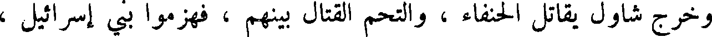
وخرج شاول يقاتل الحنفاء ، والتحم القتال بينهم ، فهزموا بني إسرائيل ،
File: 000211.gt.txt (if the image is defective, simply delete all Arabic text and the line will be excluded)
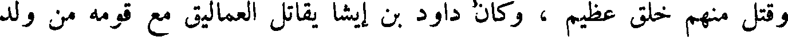
وقتل منهم خلق عظيم ، وكان داود بن ايشا يقاتل العماليق مع قومه من ولد
File: 000212.gt.txt (if the image is defective, simply delete all Arabic text and the line will be excluded)
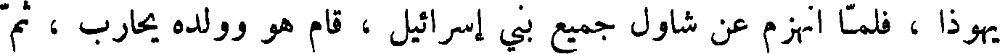
يهوذا ، فلما انهزم عن شاول جميع بني إسرائيل ، قام هو وولده يحارب ، ثم
File: 000213.gt.txt (if the image is defective, simply delete all Arabic text and the line will be excluded)
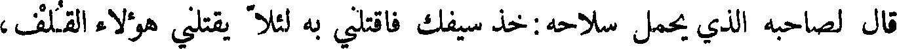
قال لصاحبه الذي يحمل سلاحه : خذ سيفك فاقتلني به لئلا يقتلني هؤلاء القلف،
File: 000214.gt.txt (if the image is defective, simply delete all Arabic text and the line will be excluded)
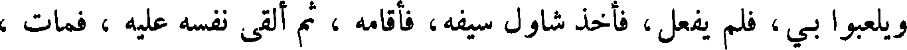
ويلعبوا بي، فلم يفعل، فأخذ شاول سيفه، فأقامه ، ثم ألقى نفسه عليه ، فمات ،
File: 000215.gt.txt (if the image is defective, simply delete all Arabic text and the line will be excluded)
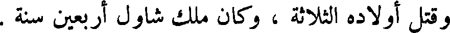
و قتل أولاده الثلاثة ، وكان ملك شاول أربعين سنة .
File: 000216.gt.txt (if the image is defective, simply delete all Arabic text and the line will be excluded)
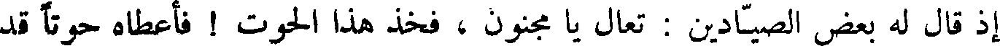
إذ قال له بعض الصيادين : تعال يا مجنون ، فخذ هذا الحوت ! فأعطاه حوتا قد
File: 000217.gt.txt (if the image is defective, simply delete all Arabic text and the line will be excluded)
تغيرت رائحته ، فصار به إلى البحر ، فغسله ، وشق بطنه ، وإذا في داخله حوت
File: 000218.gt.txt (if the image is defective, simply delete all Arabic text and the line will be excluded)
آخر ، فشق بطن الحوت الآخر ، فإذا خاتمه في جوفه ، فلبسه ، وحمد الله ،
File: 000219.gt.txt (if the image is defective, simply delete all Arabic text and the line will be excluded)
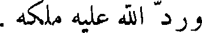
ورد الله عليه ملكه .
File: 000220.gt.txt (if the image is defective, simply delete all Arabic text and the line will be excluded)
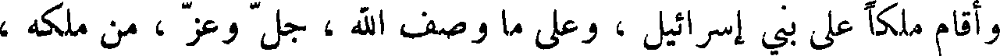
وأقام ملكا على بني إسرائيل ، وعلى ما وصف الله ، جل وعز ، من ملكه ،
File: 000221.gt.txt (if the image is defective, simply delete all Arabic text and the line will be excluded)
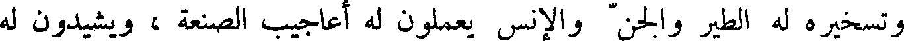
و تسخيره له الطير والجن والإنس يعملون له أعاجيب الصنعة ، ويشيدون له
File: 000222.gt.txt (if the image is defective, simply delete all Arabic text and the line will be excluded)
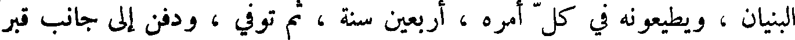
البنيان ، ويطيعونه في كل أمره ، أربعين سنة ، ثم توفي ، ودفن إلى جانب قبر
File: 000223.gt.txt (if the image is defective, simply delete all Arabic text and the line will be excluded)
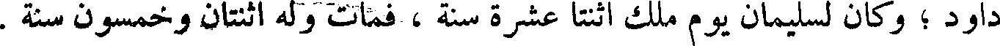
داود ؛ وكان لسليمان يوم ملك اثنتا عشرة سنة ، فمات وله اثنتان وخمسون سنة .
File: 000224.gt.txt (if the image is defective, simply delete all Arabic text and the line will be excluded)
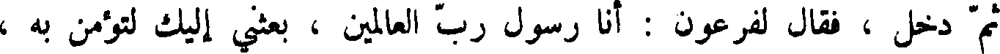
ثم دخل ، فقال لفرعون : أنا رسول رب العالمين ، بكثني إليك لتؤمن به ،
File: 000225.gt.txt (if the image is defective, simply delete all Arabic text and the line will be excluded)
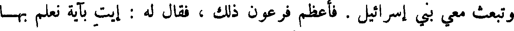
وتبعث معي بني إسرائيل . فأعظم فرعون ذلك ، فقال له : إيت بآية نعلم بها
File: 000226.gt.txt (if the image is defective, simply delete all Arabic text and the line will be excluded)
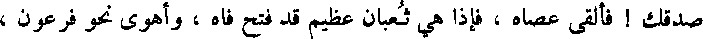
صدقك ! فألقى عصاه ، فإذا هي ثعبان عظيم قد فتح فاه ، وأهوى نحو فرعون ،
File: 000227.gt.txt (if the image is defective, simply delete all Arabic text and the line will be excluded)
فسأل موسى أن ينحيه عنه ، ثم أدخل يده في جيبه وأخرجها بيضاء من غير
File: 000228.gt.txt (if the image is defective, simply delete all Arabic text and the line will be excluded)
سوء برص .
File: 000229.gt.txt (if the image is defective, simply delete all Arabic text and the line will be excluded)
وكان فرعون أراد أن يصدقه ، فقال له هامان : أما في عبيدك أيها الملك ،
File: 000230.gt.txt (if the image is defective, simply delete all Arabic text and the line will be excluded)
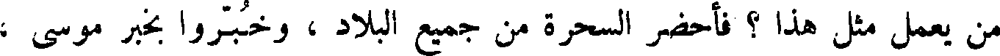
من يعمل مثل هذا ؟ فأحضر السحرة من جميع البلاد ، وخبروا بخبر موسى ،
File: 000231.gt.txt (if the image is defective, simply delete all Arabic text and the line will be excluded)
فأقاموا حينا يعملون من جلود البقر حبالا مجوفة وعصيا مجوفة ، ويزوقونها ،
File: 000232.gt.txt (if the image is defective, simply delete all Arabic text and the line will be excluded)
ويصيرون فيها الزيبق ، ثم احموا المواضع التي أرادوا أن يلقوا فيها الحبال
File: 000233.gt.txt (if the image is defective, simply delete all Arabic text and the line will be excluded)
والعصي ، ثم جلس فرعون ، واحضره ، فألقى السحرة حبالهم وعصيتهم ،
File: 000234.gt.txt (if the image is defective, simply delete all Arabic text and the line will be excluded)
فلما حمي الزئبق تحرك ، ومشت الحبال والعصي ، فألقى موسى عصاه ، فأكلت
File: 000235.gt.txt (if the image is defective, simply delete all Arabic text and the line will be excluded)
ذلك كله ، حتى لم يبقى منه شيء ، ونكص السحرة ، فقتل فرعون من قتل منهم .
File: 000236.gt.txt (if the image is defective, simply delete all Arabic text and the line will be excluded)
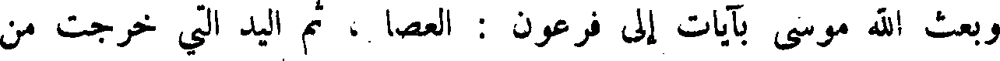
وبعث الله موسى بآيات إلى فرعون : العصا ، ثم اليد التي خرجت من
File: 000237.gt.txt (if the image is defective, simply delete all Arabic text and the line will be excluded)
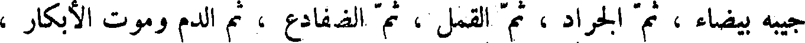
جيبه بيضاء ، ثم الجراد ، ثم القمل ، ثم الضفادع ، ثم الدم وموت الأبكار ،
File: 000238.gt.txt (if the image is defective, simply delete all Arabic text and the line will be excluded)
فلما اتصل بهم هذا قال له فرعون : إن كشفت عنا الرجز آمنا أخرجنا معك
File: 000239.gt.txt (if the image is defective, simply delete all Arabic text and the line will be excluded)
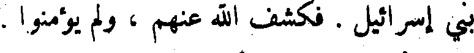
بني إسرائيل . فكشف الله عنهم ، ولم يؤمنوا .
To Save: `Ctrl+s`, make sure to choose `Webpage, complete`!